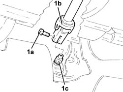
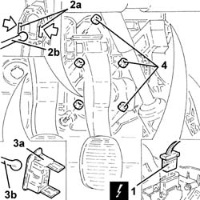
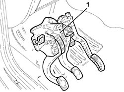
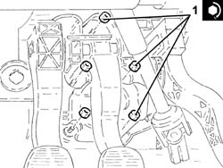
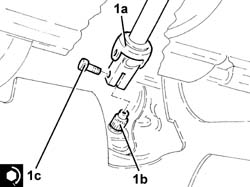

3330B02 PEDAL ASSEMBLY - R R
- Path
- Procedures > 33 BRAKING SYSTEM > 3330 HYDRAULIC BRAKING SYSTEM > 3330B PEDAL UNIT > 3330B02 PEDAL ASSEMBLY - R R
- Kind
- repair procedure (removal / refitting; the operation number is the code)
- Applies to
- all engines; all production periods
- Interactive page
- https://sloeber94.github.io/elrnDB-aGt/en/#/125001339
Applies to: all engines; all production periods
 Removing
Removing
 Refitting
RefittingEnsure that the ignition key is in the OFF position, then disconnect the negative battery terminal (-).
Name | Connector | |
|---|---|---|
- | Battery | See A1B BATTERY ( BATTERY NEGATIVE ) |
1. Undo the bolt (1a) and disconnect the steering column (1b) from the power assisted steering box pinion (1c).

Applies to: all engines; all production periods
Proceed with removal
- 5550D10 brake light switch - r+r
Release the electrical wiring from its attachments.
Applies to: all engines; all production periods
1. Disconnect the electrical connection for the accelerator pedal potentiometer.
Name | Connector | |
|---|---|---|
1 | Accelerator pedal potentiometer | See K55 ACCELERATOR PEDAL POTENTIOMETER ( FRONT ) |
2. Disengage the clips (2a) and release the brake pump (2b) from the pedal.
3. Remove the clip (3a) and release the rod for the clutch master cylinder (3b) from the pedal.
4. Undo the nuts securing the pedal assembly.

Applies to: all engines; all production periods
1. Remove the complete pedal unit.

Applies to: all engines; all production periods
Refitting
Removing1. Refit the complete pedal assembly in its seating and tighten the nuts to the specified torque.
 | Fastening | Component | Ø | Value (daNm) |
|---|---|---|---|---|
1 | Nut | COMPLETE PEDAL ASSEMBLY | M8 | (Bodyshell side) 1.8 ÷ 2.6 |

Applies to: all engines; all production periods
Connect the rod for the clutch master cylinder to the pedal and secure it using the clip.
Refit the brake pump in its seating, connecting it to the brake pedal.
Connect the electrical connection to the accelerator pedal potentiometer.
Applies to: all engines; all production periods
Refit the electrical wiring in its seating and attach it.
Proceed with refitting
- 5550D10 brake light switch - r+r
.
1. Connect the steering column (1a) to the power steering box pinion (1b) and fix it with a new bolt (1c) to the recommended torque.
| Fastening | Component | Ø | Value (daNm) |
|---|---|---|---|---|
1c | Bolt | STEERING SHAFTS | M8 | (Power assisted steering box pinion side) 2.3 ÷ 2.8 |

Applies to: all engines; all production periods
Connect the negative (-) battery terminal
Applies to: engines: 1.8 T.SPARK, 2.0 JTS, 3.2 V6; all production periods
Proceed with removal
1056B78 SWITCH on CLUTCH PEDAL - R.R.
Applies to: engines: 1.9 JTD 16V; all production periods
Proceed with removal
Applies to: engines: 1.9 JTD 16V; all production periods
Proceed with refitting
Applies to: engines: 1.8 T.SPARK, 2.0 JTS, 3.2 V6; all production periods
Proceed with refitting
1056B78 SWITCH on CLUTCH PEDAL - R.R.
.